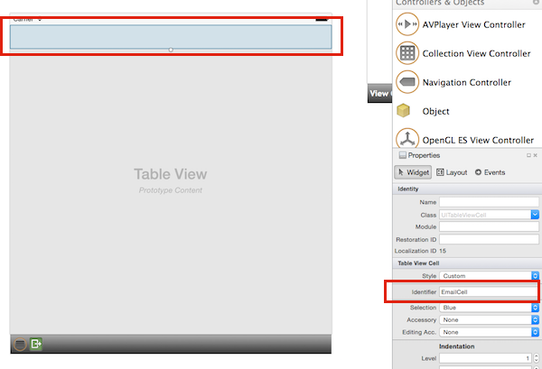

Duration
10 minutes
Goals
The primary goal of this lab will be to add support for cell-reuse into our GetCell methods.
Required assets
There is a completed solution in the Part 05 Resources folder. In addition, if you did not complete the prior exercise, you can use the completed solution from that exercise as a starting point here.
Challenge
You will be continuing from the prior exercise and adding code to your GetCell implementations to support cell reuse.
You can make the changes in either the code-based TableView, the TableViewController, or both.
The instructions and the completed solution has it implemented for both.
Here are the high-level steps you will need to perform:
- Assign a reuse identifier - this is just a unique string. We only need one since we only have one cell style.
-
Use the
UITableView.DequeReusableCellmethod to retrieve a cell. -
In the code-based approach, where we don't have a storyboard-defined prototype cell, check for
nulland create theUITableViewCellin response - passing the reuse identifier to the constructor. - In the Storyboard approach, assign the reuse identifier to the prototype cell in the designer to register it with the system.
- Initialize the cell properly based on whether it's a new cell or a reused cell.
Steps
Below are the step-by-step instructions to implement the exercise.
Adding reuse support to a code-based Table View
We will start with the code-based approach where we have a UITableViewSource defined.
-
Open the source file with your
UITableViewSourceimplementation and locate theGetCellmethod - this is where all our code changes will need to be performed. - First, define a constant string (the completed solution uses "EmailCell") to be used as your cell reuse identifier. Since we will need to repeat this in a few places, using a constant is a good practice.
-
Next, add a call at the top of the method to
UITableView.DequeReusableCell, passing the reuse identifier. If it returnsnull, then use your existing code to create the cell instead, but pass the same reuse identifier to the constructor's 2nd parameter (instead ofnull). - Since we only need to set the fonts, colors, and accessory views when we create the cell initially, move that logic into the creation section where we did not get a cell back from the system. Only the dynamic values which change on a row-by-row basis must be done every time.
-
To get the Table View to start reusing cells, we need a larger data set (i.e. more emails so we can scroll and trigger cell reuse).
Modify the call to the
EmailServerconstructor and pass in 1000 - it defaults to only 10 messages. - Run the application. You shouldn't see any change to the behavior; however, on a physical device with a lot of emails, it will likely run more smoothly due to the cell reuse.
-
One last optimization we should make: we currently assign an image each time, but now that the cells are being reused, we are leaving the old images around
for the garbage collector to deal with. These might represent large resources (they don't really right now), so we should free them as soon as we are done with them.
If the cell was returned by the
DequeReusableCellcall, then check to see if theImageView.Imageproperty is non-null and if so, callDisposeon it. You can check the code hint below for the final method implementation.
Adding reuse support to a Storyboard based cell
Let's make the same changes to our Storyboard approach. The key difference here is that the cell will be inflated by the system automatically because the reuse identifier is assigned to the Storyboard cell.
- Open the Main.storyboard file.
- Set the storyboard-based View Controller as the initial View Controller. Recall that an easy way to do this is to drag the "handle" from its current position next to the code-based View Controller so it points to the storyboard-based View Controller.
- Open the Main.storyboard and select the prototype cell in the Table View Controller - just click on the white rectangle at the top of the Table View.
- In the Properties, set the Identifier value to "EmailCell". 
- With the cell still selected, change the Style to be Subtitle - this is what we were doing before in code, but now we'll use the designer to make the same changes.
-
The cell should now have two labels in it - you can select each label and set the fonts and colors here in the designer.
- For the title, use 14pt Helvetica Light.
- For the subtitle, use 12pt Helvetica Light in a light-gray color.
-
Open the TableViewController.cs source file and locate the
GetCellmethod - this is where all our code changes will need to be performed. -
Start by adding a call at the top of the method to
UITableView.DequeReusableCell, passing the reuse identifier. You can use the same constant string you defined earlier, or re-define it here ("EmailCell"), or just use the literal string in the call. We only need it once in the code with this approach. - You can remove all the code which sets colors and fonts - the storyboard will do that when it inflates the cell.
-
You do need the code that locates the correct EmailItem and loads the data into the appropriate views. If you don't have that code in this
implementation, you can copy it from the code-behind version of your
GetCellmethod. -
Modify your call to the
EmailServerconstructor and pass in "1000". - As before, we should dispose the image - in this case we can just check for a non-null image and dispose it, no need to test the cell.
- The final method implementation is in the below code hint.
- Run the application. You shouldn't see any change to the data presentation since this is a performance optimization.

Summary
In this exercise, you have optimized the implementation of the two GetCell methods to support cell reuse.